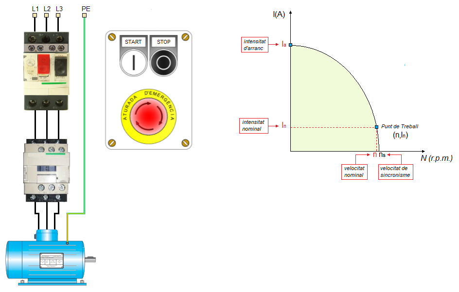
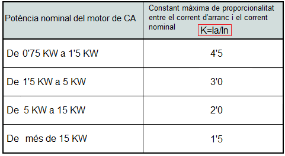
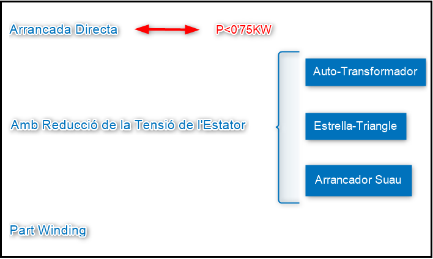
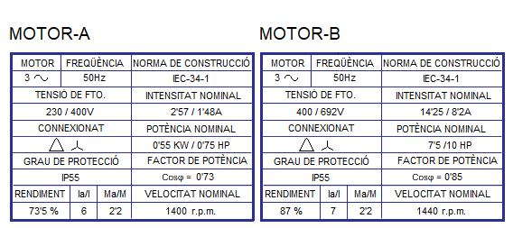
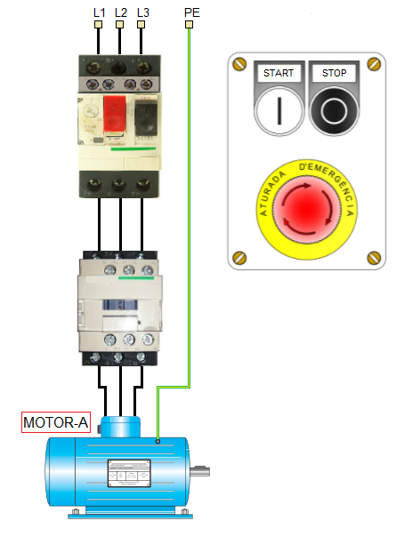

Motors Trifàsic d'Inducció. Sistemes d'Arranc
Com hem vist anteriorment, els motors trifàsics d'inducció presenten una intensitat en el moment de l'arrancada (Ia) de l'ordre de 4 i 7 vegades la nominal (In). Aquesta sobre-intensitat decreix ràpidament a mesura que el motor adquireix velocitat, fins a estabilitzar-se en el punt de treball (Veure gràfica següent).

Aquesta punta de corrent en el moment de l'arrancada (Ia) provoca caigudes de tensió i pertorbacions en les xarxes elèctriques que poden afectar a altres receptors. És per aquest motiu, que el REBT en la instrucció ITC-BT-47, obliga a incorporar sistemes adequats que limiten el valor tan elevat que té la intensitat de corrent en el moment de l'arrancada.
ITC-BT-47: Intensitat d'arrancada
Els motors de potència superior a 0,75 kW, han de disposar d'un dispositiu d'arrancada que impedisca que la relació entre el corrent d'arrancada (Ia) i el corrent nominal (In) sigue superior al valor K indicat en la següent taula:

Existeixen diferents mètodes per arrancar els motors d'inducció trifàsics que compleixen amb les especificacions de la instrucció ICT-BT-47. Els més usuals són:

Activitat
Segons les plaques característiques dels següents motors, és possible arrancar-los directament des de la xarxa elèctrica?

MOTOR-A: SÍ
- P= 0'55KW
- El MOTOR-A es pot arrancar directament des de la xarxa perquè P < 0'75KW

MOTOR-B: NO
- P=7'5KW
- Segons la taula del REBT aquesta potència es troba dintre del interval: 5 ≤ 7'5KW ≤ 10 i per tant K=2
- En el nostre cas K=7=Ia/In que és superior a K=2, la qual cosa ens impedeix arrancar directament el MOTOR-B.
Llicenciat sota la Llicència Creative Commons Reconeixement CompartirIgual 4.0